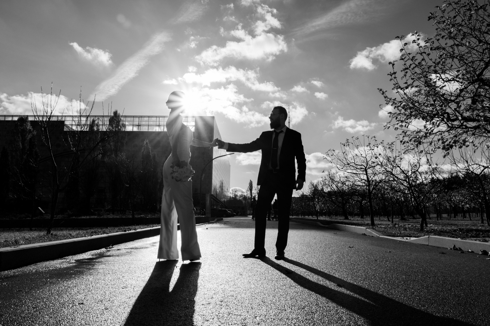

«Контакты» — вариации
Два направления, которые вы отметили. В первом каналы уменьшены до кегля фактов и разрыв между колонками задан явно, а не распоркой на всю ширину. Во втором меняется только положение кадра и текста — фотография во всех вариантах одна и та же, чтобы сравнивать раскладку, а не снимок; сам кадр выберем отдельно.
Семья А — от третьего варианта
Правый текст был 25px, стал 15px — вровень с фактами. Отступ между колонками задан числом (56–72px) вместо распорки по краям экрана.
Обе колонки собраны к центру, между ними ровно один отступ, а не половина экрана. Каналы того же кегля, что факты, но в полный тон — они и так читаются как ссылки.
Москва и Лиссабонсъёмки в обоих городах
Съёмка по записидаты — по запросу
Отвечаю в течение дняв любом из мессенджеров
Второй колонки нет вовсе: факты, под ними каналы. Разрыв исчезает по определению, страница читается сверху вниз одной мыслью.
Москва и Лиссабонсъёмки в обоих городах
Съёмка по записидаты — по запросу
Отвечаю в течение дняв любом из мессенджеров
Факты столбиком, а связь — одной мелкой строкой под ними. Каналы перестают спорить с фактами по весу и работают как подпись.
Москва и Лиссабонсъёмки в обоих городах
Съёмка по записидаты — по запросу
Отвечаю в течение дняв любом из мессенджеров
Тот же двухколоночник, что в третьем варианте, но обе колонки прижаты к левому полю и стоят рядом. Правая половина экрана остаётся воздухом — намеренно.
Москва и Лиссабонсъёмки в обоих городах
Съёмка по записидаты — по запросу
Отвечаю в течение дняв любом из мессенджеров
Зеркально: связь получает первое слово и чуть больший кегль, факты уходят во вторую колонку мелким. Полезно, если цель — чтобы написали, а не прочитали.
Москва и Лиссабонсъёмки в обоих городах
Съёмка по записидаты — по запросу
Отвечаю в течение дняв любом из мессенджеров
Семья Б — от четвёртого варианта
Первым — оригинал под серым номером, как он вам понравился. Дальше кадр становится фоном всей страницы: верхняя плашка растворяется, от неё остаётся только текст меню, лежащий прямо на фотографии.
То, что понравилось, без изменений: фотография занимает рабочую область, шапка и футер остаются на своих плашках, каналы по центру поверх кадра.

Кадр уходит под меню и под футер — фон всей страницы. Плашка сверху растворяется, от неё остаётся только текст, лежащий прямо на фотографии светлым.

Тот же фон без шапки, но связь прижата к левому нижнему углу. Кадр открыт целиком, текст не стоит у него на лице.
Связь собрана в правой трети, левые две трети кадра открыты. Композиция перестаёт быть симметричной — смотрится современнее.
Ни градиента, ни вуали: читаемость даёт сама фотография — текст ставится на тёмную часть кадра. Самый чистый вариант и самый требовательный к кадру.
Кадр не под текстом, а рядом: правая половина экрана целиком, слева на фоне сайта — каналы. Фотография не приглушается ничем.